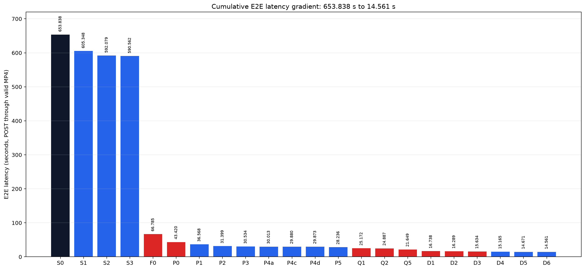

Open the 71-page English PDF Watch the Moon A/B Watch the two-prompt A/B Machine-readable data Checksums

Every declared lossy boundary has real video screenshots and full 362-frame post-codec metrics. These diagnostics measure trajectory divergence; they are not perceptual admission thresholds.
| Boundary | RGB PSNR | RGB SSIM | YUV PSNR | YUV SSIM |
|---|---|---|---|---|
| Lossy boundary A | 10.51 | 0.2558 | 16.23 | 0.7177 |
| Lossy boundary B | 12.68 | 0.3357 | 18.56 | 0.7255 |
| Lossy boundary C | 27.63 | 0.8424 | 33.52 | 0.9411 |
| Lossy boundary D | 39.24 | 0.9543 | 45.22 | 0.9839 |
| Lossy boundary E | 14.92 | 0.4452 | 20.83 | 0.7776 |
D7 AAC pre-encoding was implemented but not formally measured. The final decoder-focused Nsight Systems capture was blocked by an external workload before model load; no synthetic timing is substituted. The report explains which conclusions require Nsight Systems versus Nsight Compute.
Official prompt-writing guide source: d21241f0a4b3acbb34c97dae47fa417b7065e438. The benchmark used a pre-existing hash-locked Chinese prompt; the guide-conformant English rendering is documentation only.